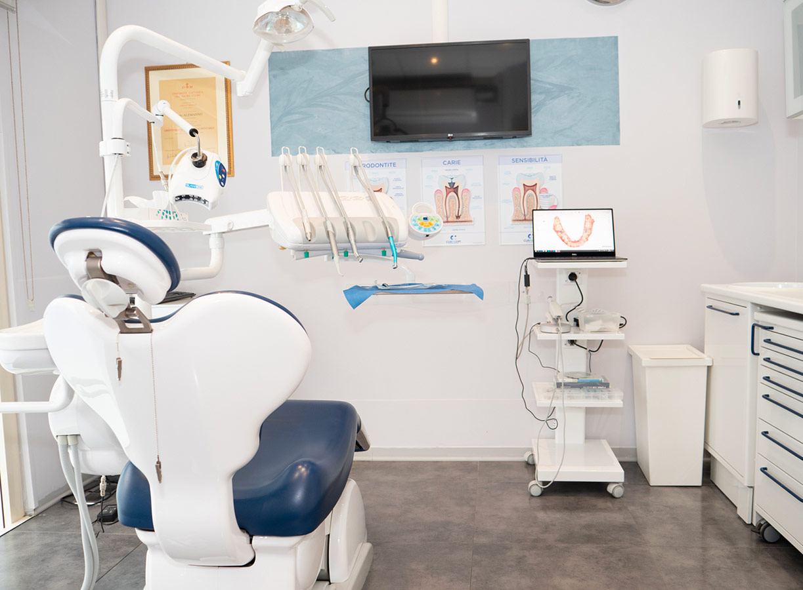
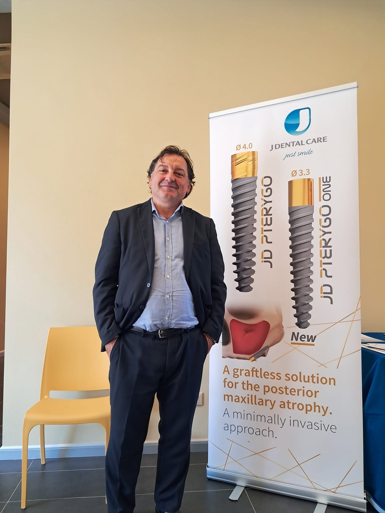

Studio Dentistico dal 1980 · Livorno
Il tuo sorriso,
senza paura.
"Il dentista che non sopporta il dolore"
Da oltre 40 anni la famiglia Nardini si prende cura del sorriso di Livorno con un approccio anti-dolore, tecnologie all'avanguardia e attenzione autentica per ogni paziente, dai bambini agli anziani.
- Oltre 40 anni di esperienza
- Tecnologia TAC 3D Cone Beam
- Studio in centro a Livorno

Chi Siamo
Una storia di famiglia, una missione: la tua serenità
Lo Studio Dentistico Dott. Stefano Nardini nasce nel 1980 a Livorno per volontà del Dott. Ennio Nardini, che per primo ha fatto della cura senza dolore la propria missione professionale. Oggi lo studio è portato avanti dal figlio, il Dott. Stefano Nardini, che ne ha raccolto l'eredità affiancandola a competenze specialistiche in implantologia, protesi e odontoiatria pediatrica.
Un team multidisciplinare di professionisti lavora ogni giorno per offrire cure moderne, precise e il più possibile confortevoli, in un ambiente pensato per mettere a proprio agio pazienti di ogni età: dai bambini, seguiti con particolare delicatezza, fino agli anziani, accompagnati con pazienza in percorsi di cura più articolati.
Formazione del Dott. Stefano Nardini
-
Laurea in Medicina e Chirurgia Università di Pisa, 2002
-
Laurea in Odontoiatria e Protesi Dentaria Università di Pisa, 2010
-
Master di II livello in Pedodonzia e Ortodonzia Intercettiva Università di Pisa, 2011
-
Iscritto all'Ordine degli Odontoiatri Provincia di Livorno

Servizi
Cure complete per tutta la famiglia
Dalla prevenzione alla chirurgia più avanzata, un unico studio per ogni esigenza del tuo sorriso.
Implantologia
Impianti in titanio per sostituire denti mancanti, fissi o come ancoraggio per protesi stabili.
Ortodonzia
Apparecchi fissi, mobili e mascherine trasparenti per allineare i denti di adulti e bambini.
Protesi Fissa
Corone e ponti in ceramica o zirconia per un sorriso naturale, solido e duraturo.
Protesi Mobile
Dentiere tradizionali e stabili, realizzate su misura per comfort e funzionalità quotidiana.
Sbiancamento Dentale
Trattamento estetico non invasivo per un sorriso più luminoso in tutta sicurezza.
Pedodonzia
Odontoiatria pediatrica dedicata, con un approccio delicato pensato per i più piccoli.
Igiene Orale
Pulizia professionale e programmi di prevenzione per mantenere il sorriso in salute.
Endodonzia
Devitalizzazioni e terapia canalare eseguite con precisione per salvare il dente naturale.
Parodontologia
Diagnosi e cura delle malattie gengivali per proteggere i tessuti di sostegno dei denti.
Chirurgia Orale
Estrazioni e interventi di chirurgia orale eseguiti con protocolli anti-dolore.
Radiologia
Radiografie singole, panoramiche 2D e TAC Cone Beam 3D per diagnosi accurate.
Cure Conservative
Otturazioni per carie con tecnica mini-invasiva, per preservare il dente naturale.
Perché Sceglierci
La cura che ti aspetteresti da una famiglia
Oltre 40 anni di esperienza
Dal 1980 due generazioni di dentisti al servizio di Livorno, con migliaia di pazienti curati.
Approccio anti-dolore
La nostra filosofia storica: massima attenzione al comfort e al benessere del paziente.
Tecnologia avanzata
Radiologia digitale con TAC Cone Beam 3D per diagnosi precise e trattamenti mirati.
Attenzione a tutta la famiglia
Cure dedicate ai bambini e percorsi pensati per le esigenze specifiche degli anziani.
Prenota
Il primo passo verso un sorriso sereno
Chiamaci per fissare una visita o compila il modulo: ti ricontatteremo il prima possibile per trovare l'orario più comodo per te.
0586 809622Contatti
Vieni a trovarci nel cuore di Livorno
-
Indirizzo Via Roma, 68 – 57125 Livorno (LI)
-
Telefono 0586 809622
-
Urgenze 349 606 2044
-
Orari Lun – Ven: 9:00 – 19:30 Sab – Dom: Chiuso
-
Parcheggio Disponibile sotto lo studio, oppure nei parcheggi convenzionati di Via Cecconi, 16 e Piazza Attias.